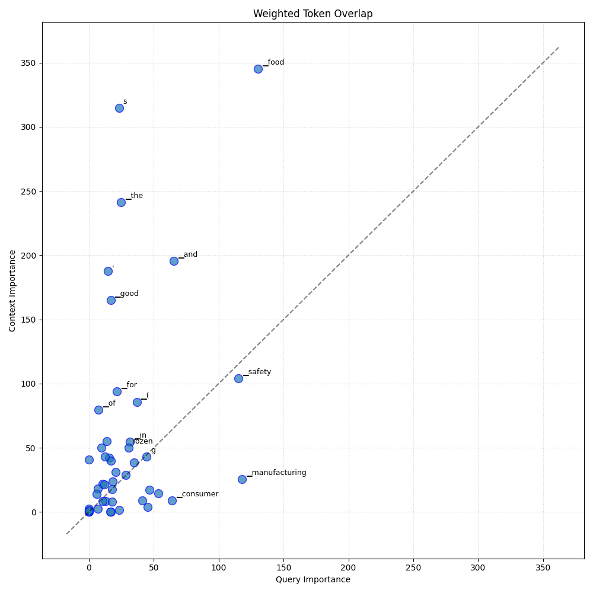
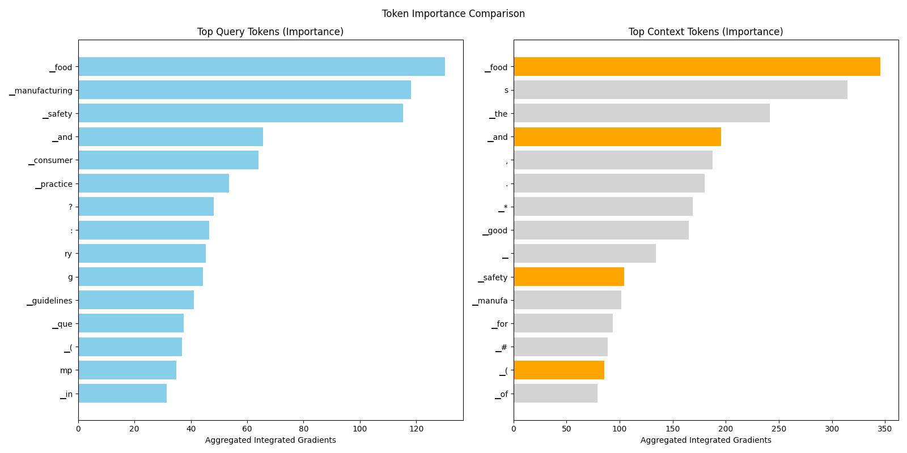

Analysis: query_1
Query: ▁que ry : ▁As ▁a ▁consumer ▁interested ▁in ▁food ▁safety , ▁could ▁you ▁elaborat e ▁on ▁the ▁guidelines ▁and ▁good ▁manufacturing ▁practice s ▁( G MP ) ▁that ▁are ▁in ▁place ▁for ▁fresh ▁me at , ▁po ul try , ▁and ▁game , ▁as ▁well ▁as ▁for ▁f rozen ▁fish ▁products , ▁and ▁how ▁these ▁practice s ▁ensure ▁the ▁safety ▁and ▁quality ▁of ▁these ▁food ▁items ?
Document Relevance

Weighted Overlap

Token Comparison

Documents
Document 1 (Click to Expand)
▁And ▁we ' ve ▁had ▁the ▁po ul try ▁growth ▁problems ▁and ▁health ▁problems ▁we ' ve ▁seen ▁with ▁that . ▁Most ▁recently ▁we ▁had ▁a ▁feed ▁recall ed ▁in ▁the ▁United ▁States ▁because ▁of ▁in appropria te ▁calci um ▁levels ▁in ▁chicken s , ▁egg - produc ing ▁chicken s . ▁That ▁turn s ▁out ▁to ▁be ▁an ▁issue ▁for ▁the ▁ shell ▁and ▁for ▁their ▁health . ▁So ▁that ' s ▁what ▁we ' re ▁talking ▁about . ▁We ' re ▁talking ▁about ▁how ▁you ▁control ▁the ▁process ▁3 ▁ | ▁P ▁a ▁g ▁e ▁of ▁ass uring ▁ingredients ▁in ▁here . ▁Not ▁that ▁we ▁want ▁to ▁tell ▁you ▁what ▁ingredient ▁has ▁to ▁be ▁there . ▁And ▁finally ▁we ' ll ▁talk ▁later ▁about ▁this , ▁but ▁difference s ▁in ▁definition s ▁of ▁very ▁small ▁businesses . ▁The ▁two ▁preventiv e ▁control ▁rules ▁define d ▁very ▁small ▁businesses ▁based ▁on ▁dollar ▁figure s ▁of ▁sales . ▁In ▁the ▁human ▁food ▁industry ▁and ▁the ▁animal ▁food ▁industry ▁are ▁just ▁very ▁different ▁just ▁in ▁size ▁of ▁scale . ▁So ▁dollars ▁figure s ▁that ▁make ▁sense ▁on ▁the ▁human ▁side , ▁make ▁no ▁sense ▁at ▁all ▁on ▁the ▁animal ▁side ▁of ▁the ▁house ▁just ▁because ▁of ▁the ▁scale ▁of ▁the ▁business . ▁I ▁put ▁these ▁up ▁here ▁not ▁because ▁I ▁intend ▁to ▁talk ▁about ▁them . ▁But ▁just ▁to ▁show ▁you ▁that ▁the ▁current ▁good ▁manufacturing ▁practice s ▁that ▁we ▁will ▁recognize ▁on ▁the ▁human ▁side ▁of ▁the ▁house ▁are ▁the ▁same ▁ones ▁that ▁we ' re ▁apply ing ▁here . ▁So ▁they ▁cover ▁all ▁the ▁areas ▁mentioned , ▁personnel , ▁plant ▁and ▁ground , ▁sanitar y ▁operation s , ▁process ▁control s , ▁ware hou sing ▁and ▁distribution . ▁Now ▁you ▁have ▁to ▁ask ▁yourself ▁where ▁do ▁we ▁start ▁here . ▁I ' ll ▁look ▁at ▁my ▁next ▁slide . ▁We ' re ▁going ▁to ▁highlight ▁a ▁couple ▁of ▁these ▁elements ▁and ▁not ▁have ▁an ▁in - depth ▁discussion . ▁But ▁just ▁to ▁give ▁you ▁some ▁idea ▁of ▁what ▁would ▁be ▁included ▁in ▁this . ▁And ▁when ▁we ▁look ▁at ▁this , ▁we ▁used ▁the ▁human ▁G MP s ▁as ▁our ▁basis ▁for ▁this . ▁And ▁we ▁realized ▁there ▁are ▁many ▁other ▁ones ▁out ▁there . ▁There ▁are ▁Code x ▁G MP s ▁for ▁animal ▁feed ing ▁practice s . ▁There ' s ▁the ▁PAS ▁2200 ▁document ▁that ' s ▁a ▁document ▁developed ▁by ▁industry ▁and ▁academia ▁that ' s ▁out ▁there ▁and ▁it ' s ▁a ▁good ▁reference . ▁And ▁there ▁are ▁obviously , ▁within ▁the ▁United ▁States , ▁there ▁are ▁other ▁places ▁other ▁programs ▁that ▁have ▁G MP s . ▁We ▁started ▁with ▁the ▁human ▁G MP s ▁large ly ▁4 ▁ | ▁P ▁a ▁g ▁e ▁because ▁at ▁the ▁time ▁we ▁were ▁doing ▁this , ▁we ▁were ▁doing ▁this ▁in ▁a ▁very ▁short ▁time ▁period ▁or ▁time ▁period ▁of ▁a ▁few ▁months ▁to ▁write ▁all ▁these ▁rules . ▁Retro spec tive ly ▁two ▁years ▁later , ▁we ▁might ▁have ▁written ▁things ▁different ly ▁if ▁we ▁knew ▁we ▁were ▁going ▁to ▁have ▁more ▁time .
Document 2 (Click to Expand)
▁Instead , ▁guidance s ▁describe ▁the ▁Agency ’ s ▁current ▁thinking ▁on ▁a ▁topic ▁and ▁should ▁be ▁view ed ▁only ▁as ▁recommendations , ▁unless ▁specific ▁regulator y ▁or ▁statu tory ▁requirements ▁are ▁ci ted . ▁The ▁use ▁of ▁the ▁word ▁“ sho uld ” ▁in ▁Agency ▁guidance s ▁means ▁that ▁something ▁is ▁suggest ed ▁or ▁recommended , ▁but ▁not ▁required . ▁II . ▁Gui dan ce ▁for ▁manufacturing ▁and ▁label ing ▁raw ▁me at ▁food s ▁for ▁companion ▁and ▁captiv e ▁non com pan ion ▁car ni vor es ▁and ▁omni vor es ▁1. ▁Manufa c ture ▁a . ▁ Ingredient ▁sources ▁i ) ▁All ▁me at - ▁and ▁po ul try - der i ved ▁ingredients ▁should ▁be ▁United ▁States ▁Department ▁of ▁Agri culture ▁( USD A ) / Food ▁Safety ▁and ▁In spec tion ▁Service ▁( F SIS ) - in spec ted ▁and ▁passed ▁for ▁human ▁consum p tion . ▁i i ) ▁We ▁recommend ▁that ▁bone s ▁and ▁other ▁hard ▁materials ▁be ▁ground . ▁i ii ) ▁All ▁other ▁ingredients ▁should ▁be ▁suitable ▁for ▁use ▁in ▁animal ▁feed s ; ▁that ▁is , ▁the ▁ingredients ▁should ▁be ▁of ▁an ▁appropriate ▁grade ▁that ▁qualified ▁experts ▁would ▁agree ▁they ▁are ▁safe ▁for ▁use ▁in ▁raw ▁food ▁for ▁animals . ▁b . ▁Manufa c turing ▁process ▁Manufa c turing ▁facilities ▁should ▁take ▁all ▁measure s ▁necessary ▁to ▁prevent ▁adult er ation . ▁These ▁measure s ▁could ▁include ▁one ▁or ▁more ▁of ▁the ▁following : ▁i ) ▁ir radi ating ▁the ▁final ▁package d ▁product ▁as ▁specifi ed ▁in ▁21 ▁CFR ▁Part ▁ 579 , ▁5 ▁## ▁CON TA INS ▁NON - BIN DING ▁RE COM M ENDA TIONS ▁i i ) ▁participat ing ▁in ▁the ▁USD A ▁volunt ary ▁inspect ion ▁program ▁for ▁Certifi ed ▁Products ▁for ▁Dog s , ▁Cat s , ▁and ▁Other ▁Car ni vora ▁(9 ▁CFR ▁Part ▁3 55) , ▁i ii ) ▁following ▁other ▁Good ▁Manufa c turing ▁Practic es , ▁such ▁as ▁those ▁for ▁human ▁food s ▁in ▁21 ▁CFR ▁Part ▁110 , ▁and / or ▁i v ) ▁implement ing ▁a ▁Hazard ▁Analys is ▁and ▁Critic al ▁Control ▁Point ▁( HA CCP ) ▁plan . ▁c . ▁Storage ▁and ▁transport ▁i ) ▁We ▁recommend ▁that , ▁unless ▁free ze - d ried , ▁product ▁remain ▁f rozen ▁at ▁all ▁times ▁prior ▁to ▁use . ▁i i ) ▁Product ▁should ▁be ▁transport ed ▁and ▁store d ▁in ▁a ▁manner ▁to ▁avoid ▁micro bi al ▁contamina tion ▁and ▁growth . ▁2. ▁Label ing ▁Labels ▁must ▁conform ▁to ▁all ▁pertinent ▁F DA ▁regulations ▁and ▁statut es . ▁In ▁addition , ▁it ▁is ▁recommended ▁that ▁the ▁label s ▁conform ▁to ▁all ▁applicable ▁Association ▁of ▁American ▁Feed ▁Control ▁Official s ▁( A AF CO ) ▁Model ▁Regula tions . ▁a . ▁Storage ▁and ▁Handling ▁Information ▁State ments ▁i ) ▁It ▁is ▁recommended ▁that ▁raw ▁f rozen ▁me at ▁and / or ▁po ul try ▁products ▁for ▁animal ▁consum p tion ▁bear ▁a ▁statement , ▁“ Ke ep ▁F rozen ”, ▁display ed ▁in ▁a ▁prominent ▁manner ▁on ▁the ▁principal ▁display ▁panel . ▁i i ) ▁We ▁recommend ▁that ▁raw ▁f rozen ▁me at ▁and / or ▁po ul try ▁products ▁for ▁animal ▁consum p tion ▁con spi cu ously ▁bear ▁a ▁statement ▁under ▁a ▁head ing ▁“ Hand ling ▁Guide lines ▁for ▁Safe ▁Use ” ▁on ▁the ▁outside ▁of ▁the ▁immediate ▁container , ▁stat ing :
Document 3 (Click to Expand)
▁# ▁The ▁Food ▁Hy gi ene ▁Guide line ▁for ▁Manufa c turer s ▁of ▁f rozen ▁and ▁refrigera ted ▁aqua tic ▁products ▁Manufa c turer s ▁of ▁f rozen ▁and ▁refrigera ted ▁aqua tic ▁products ▁are ▁to ▁comp ly ▁with ▁Guide lines ▁Ann ounce ment ▁date ▁109 ▁year ▁7 ▁month ▁1 ▁day ▁F DA ▁Food ▁word ▁109 130 17 40 ▁Letter ▁1. ▁Introdu ction ▁The ▁raw ▁materials ▁used ▁in ▁f rozen ▁and ▁refrigera ted ▁aqua tic ▁products ▁are ▁easy ▁to ▁manufacture ▁and ▁process ▁due ▁to ▁their ▁character istic s ▁During ▁the ▁process , ▁path ogen ic ▁micro organ ism s ▁grow , ▁but ▁the ▁storage ▁and ▁transport ation ▁of ▁aqua tic ▁products ▁cannot ▁be ▁maintain ed ▁Keep ing ▁it ▁at ▁a ▁low ▁temperature ▁or ▁free zing ▁state ▁may ▁also ▁cause ▁his tamine ▁and ▁volatil e ▁base ▁nit rogen ▁The ▁quality ▁of ▁the ▁product ▁varie s . ▁Therefore , ▁in ▁addition ▁to ▁maintain ing ▁its ▁product ▁temperature ▁and ▁environmental ▁Out side ▁the ▁sanitar y ▁conditions ▁of ▁the ▁environment , ▁and ▁in ▁the ▁storage ▁and ▁transport ation ▁of ▁raw ▁materials , ▁semi - fini shed ▁products , ▁finished ▁products ▁Only ▁by ▁effectively ▁man aging ▁the ▁temperature ▁of ▁the ▁environment ▁can ▁food ▁hygien e ▁and ▁safety ▁hazard s ▁be ▁reduce d . ▁Food ▁manufacture rs ▁of ▁f rozen ▁and ▁chill ed ▁aqua tic ▁products ▁are ▁managed ▁according ▁to ▁food ▁safety ▁and ▁hygien e ▁law ▁( ▁Here ina fter ▁refer red ▁to ▁as ▁food ▁safety ▁law ▁) ▁Regula tions ▁should ▁meet ▁the ▁guidelines ▁of ▁good ▁food ▁hygien e ▁standard s . ▁Base d ▁on ▁the ▁content ▁of ▁this ▁guide line ▁and ▁the ▁actual ▁operating ▁situation , ▁the ▁operator s ▁should ▁formula te ▁customiz ed ▁standard ▁operating ▁procedure s , ▁improve ▁and ▁implement ▁independent ▁management ▁to ▁ensure ▁the ▁safety ▁and ▁hygien e ▁of ▁f rozen ▁and ▁refrigera ted ▁aqua tic ▁products . ▁Two , ▁ scope ▁of ▁application ▁This ▁guide line ▁is ▁applicable ▁to ▁all ▁kind s ▁of ▁fish , ▁ shell fish , ▁cep halo pod s , ▁cru sta ce ans ▁and ▁other ▁aqua tic ▁animals , ▁with ▁or ▁without ▁head , ▁ tail , ▁gi lls , ▁gut , ▁scale s , ▁and ▁skin . ▁( ▁Shell ing ▁) ▁After ▁the ▁whole ▁or ▁part ▁of ▁the ▁process , ▁such ▁as ▁cu tting , ▁cu tting , ▁etc . , ▁the ▁food ▁manufacture r ▁of ▁f rozen ▁and ▁refrigera ted ▁aqua tic ▁products ▁process ed ▁and ▁pres er ved ▁by ▁means ▁of ▁refrigera tion , ▁free zing , ▁quick ▁free zing , ▁etc . ▁1 ▁Definition s ▁of ▁gin seng ▁and ▁proper ▁nou ns ▁1. ▁Scrap s : ▁Res idu es ▁and ▁was tes ▁left ▁in ▁the ▁manufacturing ▁process ▁cannot ▁be ▁recover ed ▁or ▁re cycle d ▁by ▁the ▁unit ▁manufacturing ▁or ▁process ing ▁industry ▁or ▁used ▁as ▁related ▁to ▁its ▁business ▁items , ▁but ▁can ▁still ▁be ▁used ▁as ▁items ▁for ▁other ▁purpose s ▁or ▁price ▁changes . ▁2. ▁Loading ▁and ▁un load ing ▁area : ▁load ing ▁on ▁the ▁cargo ▁( ▁cabinet ▁) ▁The ▁food ▁in ▁the ▁car ▁is ▁moved ▁to ▁the ▁storage ▁center ▁or ▁sales ▁place , ▁or ▁the ▁food ▁is ▁load ed ▁on ▁the ▁good s ▁from ▁the ▁manufacture r ▁or ▁the ▁storage ▁center ▁( ▁cabinet ▁) ▁Work ▁places ▁such ▁as ▁in ▁the ▁car .
Document 4 (Click to Expand)
▁# ▁Good ▁Manufa c turing ▁Practic es ▁( G MP s ) ▁for ▁the ▁21 st ▁Century ▁- ▁Food ▁Process ing ▁## ▁Table ▁of ▁Content s ▁Section ▁One ▁Current ▁Food ▁Good ▁Manufa c turing ▁Practic es ▁* ▁1.1 ▁The ▁Development ▁of ▁Food ▁G MP s ▁* ▁1.2 ▁Key ▁Pro vision s ▁of ▁Food ▁G MP s ▁* ▁* ▁1. 2.1 ▁General ▁Pro vision s ▁( Sub part ▁A ) ▁* ▁* ▁1.2. 2 ▁Building s ▁and ▁Faci li ties ▁( Sub part ▁B ) ▁* ▁* ▁1.2. 3 ▁Equip ment ▁( Sub part ▁C ) ▁* ▁* ▁1.2. 4 ▁Production ▁and ▁Process ▁Control s ▁( Sub part ▁E ) ▁* ▁* ▁1. 2.5 ▁D efect ▁Action ▁Level s ▁( Sub part ▁G ) ▁* ▁* ▁Reference s ▁Section ▁Two ▁Literatur e ▁Review ▁of ▁Common ▁Food ▁Safety ▁Problem s ▁and ▁App lic able ▁Control s ▁* ▁2.1 ▁Micro bi ological ▁Safety ▁* ▁2.2 ▁Chemi cal ▁Safety ▁* ▁2.3 ▁Physic al ▁Safety ▁* ▁2.4 ▁Other ▁Considera tions ▁* ▁Reference s ▁Section ▁Three ▁Previous ▁Survey s ▁of ▁Manufa c turing ▁Practic es ▁in ▁the ▁Food ▁Industry ▁* ▁3.1 ▁Me at ▁and ▁Po ul try ▁Liste ria ▁Re asse s s ment ▁Survey ▁* ▁3.2 ▁Liste ria ▁Re asse s s ment - E valu ation ▁Report ▁* ▁3.3 ▁Food ▁Process ing ▁Magazine ' s ▁Annu al ▁Manufa c turing ▁Trend s ▁Survey ▁* ▁3.4 ▁Food ▁Engineering ▁Magazine ' s ▁Annu al ▁Best ▁Manufa c turing ▁Practic es ▁Survey ▁* ▁3.5 ▁A ▁Survey ▁of ▁Control ▁System ▁Vali da tion ▁Practic es ▁in ▁the ▁Food ▁Industry ▁* ▁ 3.6 ▁Automat ion ▁Practic es ▁in ▁the ▁Food ▁Industry ▁* ▁ 3.7 ▁Survey ▁on ▁the ▁Use ▁of ▁Computer - In te grat ed ▁Manufa c turing ▁in ▁Food ▁Process ing ▁Comp anie s ▁* ▁ 3.8 ▁F DA ▁HA CCP ▁Survey ▁* ▁ 3.9 ▁Survey ▁of ▁Mary land ▁Ci der ▁Produc er ▁Practic es ▁* ▁Reference s ▁Section ▁Four ▁Common ▁Food ▁Safety ▁Problem s ▁in ▁the ▁U . S . ▁Food ▁Process ing ▁Industry : ▁A ▁Del phi ▁Study ▁* ▁4.1 ▁Method ology ▁* ▁4.2 ▁Results ▁* ▁* ▁4. 2.1 ▁Round ▁1 ▁Results ▁* ▁* ▁4. 2.2 ▁Round ▁2 ▁Results ▁* ▁* ▁4. 2.3 ▁Round ▁3 ▁Results ▁* ▁* ▁4. 2.4 ▁Post - S tud y ▁Discuss ions ▁with ▁Select ▁Expert s ▁* ▁* ▁* ▁4.2 . 4.1 ▁Add i tional ▁Resource s ▁Reco mmende d ▁* ▁* ▁* ▁4.2 . 4.2 ▁Current ▁Government ▁Program s ▁of ▁Potential ▁Interes t ▁* ▁Reference s ▁App endi x ▁A ▁Anno ta ted ▁Bibli ography ▁on ▁Food ▁Safety ▁Problem s ▁and ▁Reco mmende d ▁Preventiv e ▁Control s ▁App endi x ▁B ▁Definition s ▁of ▁Food ▁Safety ▁Problem s
Document 5 (Click to Expand)
▁# ▁Good ▁Manufa c turing ▁Practic es ▁( G MP s ) ▁for ▁the ▁21 st ▁Century ▁- ▁Food ▁Process ing ▁## ▁Table ▁of ▁Content s ▁Section ▁One ▁Current ▁Food ▁Good ▁Manufa c turing ▁Practic es ▁* ▁1.1 ▁The ▁Development ▁of ▁Food ▁G MP s ▁* ▁1.2 ▁Key ▁Pro vision s ▁of ▁Food ▁G MP s ▁* ▁* ▁1. 2.1 ▁General ▁Pro vision s ▁( Sub part ▁A ) ▁* ▁* ▁1.2. 2 ▁Building s ▁and ▁Faci li ties ▁( Sub part ▁B ) ▁* ▁* ▁1.2. 3 ▁Equip ment ▁( Sub part ▁C ) ▁* ▁* ▁1.2. 4 ▁Production ▁and ▁Process ▁Control s ▁( Sub part ▁E ) ▁* ▁* ▁1. 2.5 ▁D efect ▁Action ▁Level s ▁( Sub part ▁G ) ▁* ▁* ▁Reference s ▁Section ▁Two ▁Literatur e ▁Review ▁of ▁Common ▁Food ▁Safety ▁Problem s ▁and ▁App lic able ▁Control s ▁* ▁2.1 ▁Micro bi ological ▁Safety ▁* ▁2.2 ▁Chemi cal ▁Safety ▁* ▁2.3 ▁Physic al ▁Safety ▁* ▁2.4 ▁Other ▁Considera tions ▁* ▁Reference s ▁Section ▁Three ▁Previous ▁Survey s ▁of ▁Manufa c turing ▁Practic es ▁in ▁the ▁Food ▁Industry ▁* ▁3.1 ▁Me at ▁and ▁Po ul try ▁Liste ria ▁Re asse s s ment ▁Survey ▁* ▁3.2 ▁Liste ria ▁Re asse s s ment - E valu ation ▁Report ▁* ▁3.3 ▁Food ▁Process ing ▁Magazine ' s ▁Annu al ▁Manufa c turing ▁Trend s ▁Survey ▁* ▁3.4 ▁Food ▁Engineering ▁Magazine ' s ▁Annu al ▁Best ▁Manufa c turing ▁Practic es ▁Survey ▁* ▁3.5 ▁A ▁Survey ▁of ▁Control ▁System ▁Vali da tion ▁Practic es ▁in ▁the ▁Food ▁Industry ▁* ▁ 3.6 ▁Automat ion ▁Practic es ▁in ▁the ▁Food ▁Industry ▁* ▁ 3.7 ▁Survey ▁on ▁the ▁Use ▁of ▁Computer - In te grat ed ▁Manufa c turing ▁in ▁Food ▁Process ing ▁Comp anie s ▁* ▁ 3.8 ▁F DA ▁HA CCP ▁Survey ▁* ▁ 3.9 ▁Survey ▁of ▁Mary land ▁Ci der ▁Produc er ▁Practic es ▁* ▁Reference s ▁Section ▁Four ▁Common ▁Food ▁Safety ▁Problem s ▁in ▁the ▁U . S . ▁Food ▁Process ing ▁Industry : ▁A ▁Del phi ▁Study ▁* ▁4.1 ▁Method ology ▁* ▁4.2 ▁Results ▁* ▁* ▁4. 2.1 ▁Round ▁1 ▁Results ▁* ▁* ▁4. 2.2 ▁Round ▁2 ▁Results ▁* ▁* ▁4. 2.3 ▁Round ▁3 ▁Results ▁* ▁* ▁4. 2.4 ▁Post - S tud y ▁Discuss ions ▁with ▁Select ▁Expert s ▁* ▁* ▁* ▁4.2 . 4.1 ▁Add i tional ▁Resource s ▁Reco mmende d ▁* ▁* ▁* ▁4.2 . 4.2 ▁Current ▁Government ▁Program s ▁of ▁Potential ▁Interes t ▁* ▁Reference s ▁App endi x ▁A ▁Anno ta ted ▁Bibli ography ▁on ▁Food ▁Safety ▁Problem s ▁and ▁Reco mmende d ▁Preventiv e ▁Control s ▁App endi x ▁B ▁Definition s ▁of ▁Food ▁Safety ▁Problem s
Document 6 (Click to Expand)
▁Government ▁programs ▁are ▁being ▁structure d ▁to ▁encourage ▁the ▁consumer ▁to ▁take ▁responsibility ▁for ▁handling ▁products ▁in ▁a ▁manner ▁that ▁contribute s ▁to ▁quality ▁and ▁safety . ▁However , ▁the ▁lack ▁of ▁ap preci ation ▁by ▁industry ▁and ▁government ▁with ▁regard ▁to ▁international ▁food ▁laws ▁and ▁agreement s ▁still ▁present s ▁a ▁challenge ▁to ▁maintain ing ▁food ▁safety ▁and ▁quality . ▁This ▁discussion ▁will ▁attempt ▁to ▁deliver ▁some ▁insight ▁into ▁the ▁status ▁of ▁international ▁food ▁code s ▁and ▁standard s . ▁Canada ▁Canada ▁is ▁a ▁nation ▁with ▁a ▁population ▁of ▁approximately ▁32 ▁million . ▁It ▁is ▁considered ▁a ▁world ▁leader ▁in ▁en s uring ▁that ▁food ▁safety ▁and ▁quality ▁in ▁agricultura l ▁food ▁products ▁are ▁maintain ed ▁throughout ▁the ▁food ▁continu um . ▁ Respons i bility ▁is ▁shared ▁by ▁primary ▁producer s , ▁processo rs , ▁transporter s , ▁distributor s , ▁retail ers , ▁restaurants , ▁and ▁even ▁manufacture rs ▁of ▁packaging ▁materials ▁and ▁ ice . [15] ▁Re fri ger ated ▁and ▁f rozen ▁food s ▁are ▁also ▁subject ▁to ▁detailed ▁regulator y ▁control s . ▁In ▁Canada ▁these ▁regulator y ▁measure s ▁are ▁in ▁place ▁at ▁the ▁national ▁level , ▁and ▁fit ▁hand - in - g love ▁with ▁international ▁community ▁requirements ▁where ▁HA CCP - based ▁approach es ▁to ▁hygien e ▁have ▁been ▁established . ▁Canadian ▁legisla tion ▁affect ing ▁the ▁cold ▁chain ▁includes ▁the ▁Canadian ▁Food ▁In spec tion ▁Agency ▁Act , ▁Food ▁and ▁Drug s ▁Act , ▁Me at ▁In spec tion ▁Act , ▁Canada ▁Agri cultural ▁Products ▁Act ▁and ▁the ▁Fish ▁In spec tion ▁Act ▁and ▁their ▁respective ▁regulations . ▁Industry ▁within ▁Canada ’ s ▁border s ▁has ▁e mbra ced ▁volunt ary ▁national ▁food ▁safety ▁standard s ▁in ▁partnership ▁with ▁Agri culture ▁and ▁Agri - Food ▁Canada ▁( AA FC ) ▁and ▁other ▁government ▁organization s . ▁These ▁standard s ▁manifest ▁themselves ▁within ▁the ▁Food ▁Safety ▁En han ce ment ▁Program ▁( FS EP ) ▁developed ▁by ▁the ▁Canadian ▁Food ▁In spec tion ▁Agency ▁( CF IA ), ▁which ▁was ▁designed ▁to ▁encourage ▁the ▁establish ment ▁and ▁maintenance ▁of ▁HA CCP - based ▁food ▁safety ▁systems ▁in ▁federal ly ▁registered ▁agricultura l ▁food ▁process ing ▁establish ments . [16] ▁The ▁control s ▁exercise d ▁by ▁the ▁cold ▁chain ▁within ▁FS EP , ▁such ▁as ▁G MP s ▁and ▁temperature ▁management , ▁are ▁part ▁and ▁parcel ▁of ▁the ▁pre re qui site ▁programs , ▁and / or ▁critical ▁control ▁points ▁( CCP s ) ▁developed ▁and ▁maintain ed ▁by ▁each ▁produc ing ▁member ▁in ▁the ▁food ▁chain . ▁The ▁generic ▁models , ▁including ▁dair y ▁products , ▁egg ▁and ▁process ed ▁egg s , ▁me at ▁and ▁po ul try ▁me at , ▁and ▁process ed ▁products , ▁were ▁developed ▁to ▁cover ▁as ▁many ▁process es ▁and ▁products ▁as ▁possible ▁to ▁facilita te ▁the ▁development ▁of ▁plant - specific ▁HA CCP ▁plans . [17] ▁HA CCP ▁is ▁now ▁mandato ry ▁in ▁federal ly ▁inspect ed ▁me at ▁and ▁po ul try ▁process ing ▁plant s . ▁Prior ▁to ▁the ▁development ▁of ▁HA CCP ▁plans ▁under ▁FS EP , ▁establish ments ▁are ▁required ▁to ▁have ▁developed , ▁document ed ▁and ▁implement ed ▁programs ▁to ▁control ▁factors ▁that ▁may ▁not ▁be ▁directly ▁related ▁to ▁manufacturing ▁control s ▁but ▁that ▁support ▁the ▁HA CCP ▁plans . ▁The ▁CF IA ▁and ▁the ▁food ▁sector ▁have ▁developed ▁generic ▁models ▁for ▁many ▁commodi ties ▁including ▁one ▁specific ▁to ▁cold ▁storage / free zer ▁facilities ▁and ▁a ▁mandato ry ▁Quality ▁Management ▁Program ▁( Q MP ) ▁for ▁fish ▁and ▁sea food . [ 18 , 19 ]
Document 7 (Click to Expand)
▁Any ▁materials ▁not ▁from ▁the ▁product ' s ▁origin ▁or ▁input s . ▁* ▁14. % ▁1 ▁Good ▁Health ▁Practic es : ▁All ▁practice s ▁related ▁to ▁the ▁circumstances ▁and ▁procedure s ▁necessary ▁to ▁ensure ▁the ▁safety ▁and ▁suit ability ▁of ▁food ▁throughout ▁all ▁stage s ▁of ▁the ▁food ▁production ▁and ▁handling ▁chain . ▁* ▁15. % ▁1 ▁Read y - to - E at ▁Products ▁The ▁products ▁are ▁intended ▁for ▁human ▁consum p tion ▁directly ▁and ▁do ▁not ▁require ▁additional ▁operation s ▁or ▁steps ▁such ▁as ▁disposi ng ▁of ▁path ogen ic ▁micro organ ism s . ▁* ▁16. % ▁1 ▁free ze ▁burn s ▁Spot ting ▁and ▁change ▁in ▁the ▁color ▁of ▁me at ▁as ▁a ▁result ▁of ▁a ▁large ▁loss ▁of ▁mois ture ▁evidence d ▁by ▁the ▁change ▁of ▁the ▁natural ▁color ▁of ▁the ▁surface ▁layer ▁to ▁a ▁white ▁or ▁smaller ▁color , ▁so ▁that ▁it ▁extend s ▁deep ▁below ▁the ▁surface ▁and ▁is ▁difficult ▁to ▁leave ▁without ▁dama ging ▁the ▁natural ▁appearance ▁of ▁the ▁product . ▁* ▁4. ▁General ▁requirements : ▁* ▁1. ▁1% ▁that ▁the ▁product ▁is ▁prepared ▁in ▁accordance ▁with ▁the ▁sanitar y ▁conditions ▁mentioned ▁in ▁the ▁Gul f ▁standard ▁specifica tions ▁mentioned ▁in ▁claus es ▁( 2.2 , ▁3.2 , ▁4.2 , ▁5.2 , ▁6.2 , ▁8. 2) . ▁* ▁* ▁% ▁1. % ▁2 ▁The ▁me at ▁should ▁be ▁safe , ▁healthy , ▁and ▁suitable ▁for ▁human ▁consum p tion , ▁and ▁in ▁compliance ▁with ▁the ▁Gul f ▁standard s ▁mentioned ▁in ▁claus es ▁(1 3.2 , ▁14. 2 , ▁15. 2 , ▁16. 2 , ▁17. 2 , ▁18. 2 , ▁33. 2) . ▁* ▁3. ▁1% ▁that ▁the ▁me at ▁used ▁in ▁production ▁is ▁the ▁product ▁of ▁car ni vor es ▁sla ught er ed ▁in ▁a ▁sla ught er house ▁that ▁app lies ▁food ▁safety ▁regulations ▁or ▁its ▁equivalent ▁in ▁addition ▁to ▁the ▁application ▁of ▁the ▁Gul f ▁standard ▁mentioned ▁in ▁items ▁( 4.2 ▁and ▁11. 2) . ▁* ▁* ▁% ▁1. % ▁2 ▁The ▁other ▁added ▁ingredients ▁added ▁other ▁than ▁non - me at ▁must ▁comp ly ▁with ▁good ▁hygien ic ▁practice s ▁and ▁conform ▁to ▁the ▁Gul f ▁standard ▁specifica tions ▁for ▁each ▁of ▁them . ▁* ▁5. ▁1% ▁that ▁the ▁used ▁water ▁is ▁drink able ▁water ▁according ▁to ▁the ▁Gul f ▁standard ▁mentioned ▁in ▁the ▁claus e ▁* ▁(12 . % ▁1) .
Document 8 (Click to Expand)
▁Exam ples ▁of ▁equivalent ▁terms ▁are ▁Good ▁Agri culture ▁practice ▁( GA P ), ▁Good ▁Veterinar ian ▁Practic e ▁( G VP ), ▁Good ▁Manufa c turing ▁Practic e ▁( G MP ), ▁Good ▁Hy gi ene ▁Practic e ▁( G HP ), ▁Good ▁Production ▁Practic e ▁( G PP ), ▁Good ▁Distribu tion ▁Practic e ▁( GDP ) ▁and ▁Good ▁Trading ▁Practic e ▁( G TP ) ▁( Com mission ▁No tice , ▁C 278 /2016 ). ▁Re cycle d ▁water : ▁water ▁which ▁is ▁re used ▁in ▁the ▁production ▁process , ▁with ▁or ▁without ▁water ▁treatment ▁( e . g . ▁filtr ation , ▁dis infect ion ) ▁R TE : ▁ready - to - e at ▁food ▁( Reg ulation ▁( EC ) ▁No ▁20 73 /2005 ) ▁: ▁‘ rea dy - to - e at ▁food ’ ▁means ▁food ▁intended ▁by ▁the ▁producer ▁or ▁the ▁manufacture r ▁for ▁direct ▁human ▁consum p tion ▁without ▁the ▁need ▁for ▁cooking ▁or ▁other ▁process ing ▁effective ▁to ▁elimina te ▁micro - ▁organism s ▁of ▁concern ▁or ▁to ▁reduce ▁them ▁to ▁an ▁acceptable ▁level . ▁n R TE : ▁non ▁ready - to - e at : ▁refer s ▁to ▁food s , ▁opposite ▁to ▁R TE ▁food s , ▁intended ▁by ▁the ▁producer ▁to ▁be ▁cook ed ▁or ▁subject ed ▁to ▁other ▁process ing ▁effective ▁to ▁either ▁elimina te ▁micro - organ ism s ▁of ▁concern ▁or ▁to ▁reduce ▁them ▁to ▁an ▁acceptable ▁level . ▁San iti zer / Dis infect ant : ▁product ▁app lies ▁for ▁the ▁dis infect ion ▁of ▁surface s ▁after ▁cleaning . ▁A ▁bio ci dal ▁product ▁should ▁be ▁define d ▁according ▁to ▁the ▁Regula tion ▁( EC ) ▁No ▁5 28 /2012 . ▁Quick - f rozen : ▁quick - f rozen ▁food st uff s ' ▁means ▁food st uff s ▁( Direct ive ▁( EC ) ▁89 / 108 ▁and ▁C AC , ▁1976 ) ▁: ▁* ▁which ▁have ▁under go ne ▁a ▁suitable ▁free zing ▁process ▁known ▁as ▁' qui ck - free zing ' ▁where by ▁the ▁zone ▁of ▁maximum ▁crystal l ization ▁is ▁cross ed ▁as ▁rapid ly ▁as ▁possible , ▁de pending ▁on ▁the ▁type ▁of ▁product , ▁and ▁the ▁result ing ▁temperature ▁of ▁the ▁product ▁( a fter ▁the r mal ▁stabil ization ) ▁is ▁continu ously ▁maintain ed ▁at ▁a ▁level ▁of ▁ -18 ▁° C ▁or ▁lower ▁at ▁all ▁points , and ▁* ▁which ▁are ▁market ed ▁in ▁such ▁a ▁way ▁as ▁to ▁indicate ▁that ▁they ▁possess ▁this ▁character istic . ▁PRO F EL ▁ LIST ERIA ▁GU IDE LINE S ▁P AGE ▁9 ▁> ▁T ABLE ▁OF ▁CON TEN TS ▁## ▁2 ▁## ▁Good ▁practice s ▁and ▁## ▁Pre ▁Re qui site ▁Program s ▁( PR P s ) ▁> ▁T ABLE ▁OF ▁CON TEN TS ▁PR P s ▁are ▁important ▁fundamental s ▁in ▁the ▁pre vention ▁and ▁control ▁of ▁hygien e ▁and ▁food ▁safety ▁in ▁the ▁frame ▁of ▁a ▁food ▁safety ▁management ▁system ▁implement ed ▁in ▁FB Os . ▁PR P s ▁include ▁good ▁hygien ic ▁and ▁good ▁manufacturing ▁practice s ▁and ▁all ▁measure s ▁taken ▁to ▁prevent ▁contamina tion ▁or ▁out g row th ▁by ▁micro organ ism s . ▁These ▁guidelines ▁follow ▁the ▁structure ▁of ▁the ▁EU ▁Commission ▁No tice ▁on ▁Food ▁Safety ▁Management ▁( C 278 /2016 ).
Document 9 (Click to Expand)
▁In ▁accordance ▁with ▁the ▁power s ▁set ▁for th ▁in ▁Article ▁10 ▁of ▁Executive ▁De cre e ▁No . ▁12 90 , ▁published ▁in ▁the ▁Supplement ▁to ▁Official ▁Gaz ette ▁No . ▁ 788 ▁of ▁September ▁13, ▁2012, ▁as ▁amen ded ▁by ▁Executive ▁De cre e ▁No . ▁ 544 ▁of ▁January ▁14 , ▁2015, ▁published ▁in ▁Official ▁Gaz ette ▁No . ▁ 428 ▁of ▁January ▁30 , ▁2015, ▁the ▁Executive ▁Director ▁of ▁A RC SA ▁RES OL VES : ▁TO ▁ ISS UE ▁THE ▁ TECH NICA L ▁SAN ITA RY ▁REG ULA TIONS ▁FOR ▁THE ▁ CONT ROL ▁AND ▁SUR VE ILL ANCE ▁OF ▁BU LK ▁PROCES SED ▁F OOD ▁FOR ▁HU MAN ▁CONS UMP TION ▁CHA P TER ▁I ▁OF ▁THE ▁O BJ ECT ▁AND ▁F IEL D ▁OF ▁APP LICA TION ▁Art . ▁1. - ▁Object ▁The ▁purpose ▁of ▁these ▁technical ▁health ▁regulations ▁is ▁to ▁establish ▁guidelines ▁applicable ▁to ▁the ▁sale ▁of ▁process ed ▁food s ▁for ▁human ▁consum p tion ▁in ▁bul k ▁and ▁their ▁ fraction ation , ▁as ▁well ▁as ▁criteri a ▁for ▁the ▁control ▁and ▁sur ve illa nce ▁of ▁such ▁products . ▁Art . ▁2. ▁- ▁Scop e ▁These ▁technical ▁health ▁regulations ▁are ▁mandato ry ▁for ▁natural ▁or ▁legal ▁person s ▁responsible ▁for ▁the ▁manufacture , ▁import , ▁storage , ▁distribution ▁or ▁marketing ▁in ▁the ▁national ▁territor y ▁of ▁food ▁for ▁human ▁consum p tion ▁process ed ▁in ▁bul k ▁and ▁its ▁ fraction ation ▁intended ▁for ▁the ▁final ▁consumer ▁or ▁food ▁preparation ▁in ▁mass ▁catering ▁establish ments . ▁CHA P TER ▁II ▁ DEF INI TIONS ▁Art . ▁3 ▁The ▁following ▁definition s ▁are ▁established ▁for ▁the ▁application ▁of ▁these ▁technical ▁health ▁regulations : ▁Process ed ▁food ▁Any ▁natural ▁or ▁artificial ▁food st uff ▁that ▁has ▁been ▁subject ed ▁to ▁technolog ical ▁operation s ▁for ▁human ▁consum p tion ▁in ▁order ▁to ▁be ▁transform ed , ▁modifi ed ▁and ▁pres er ved , ▁which ▁is ▁distribu ted ▁and ▁market ed ▁in ▁container s ▁label led ▁under ▁a ▁specific ▁brand ▁name . ▁The ▁term ▁process ed ▁food ▁extend s ▁to ▁alcohol ic ▁and ▁non - al co ho lic ▁be ver ages , ▁table ▁water s , ▁condi ments , ▁spi ces ▁and ▁food ▁addit ives . ▁Bul k ▁food . - ▁It ▁is ▁that ▁process ed ▁food ▁that ▁is ▁market ed ▁in ▁large ▁quanti ties . ▁Good ▁Manufa c turing ▁Practic es ▁( G MP ) ▁A ▁set ▁of ▁preventiv e ▁measure s ▁and ▁general ▁hygien e ▁practice s ▁in ▁the ▁handling , ▁preparation , ▁process ing , ▁packaging ▁and ▁storage ▁of ▁food ▁for ▁human ▁consum p tion , ▁in ▁order ▁to ▁ensure ▁that ▁food ▁is ▁manufacture d ▁under ▁adequat e ▁sanitar y ▁conditions ▁and ▁thu s ▁reduce ▁potential ▁risk s ▁or ▁hazard s ▁to ▁its ▁safety . ▁Certifica te ▁of ▁Good ▁Manufa c turing ▁Practic es ▁Document ▁issue d ▁by ▁the ▁ac credit ed ▁In spec tion ▁Organis ms , ▁to ▁the ▁establish ment ▁that ▁fulfill s ▁all ▁the ▁disposition s ▁established ▁in ▁the ▁present ▁sanitar y ▁technical ▁regula tion . ▁Direct ▁purchase ▁Pur cha se ▁of ▁products ▁directly ▁in ▁the ▁establish ment ▁or ▁place ▁of ▁sale ▁such ▁as ▁supermarket s , ▁micro - market s , ▁shop s , ▁fair s , ▁among ▁others . ▁Conta mination ▁Introdu ction ▁or ▁presence ▁of ▁any ▁bi ological , ▁chemical ▁or ▁physical ▁hazard ▁in ▁the ▁food ▁or ▁in ▁the ▁food ▁environment .
Document 10 (Click to Expand)
▁* ▁For ▁the ▁problem ▁of ▁foreign ▁matter ▁mix ing ▁into ▁the ▁product , ▁separate ▁effective ▁pre vention ▁and ▁management ▁measure s ▁should ▁be ▁formula ted . ▁Each ▁production ▁line ▁should ▁be ▁equip ped ▁with ▁a ▁metal ▁detect or ▁to ▁prevent ▁metalli c ▁foreign ▁matter ▁from ▁mix ing ▁into ▁the ▁food ; ▁glass ▁thermo meter s ▁should ▁not ▁be ▁used ▁to ▁test ▁the ▁product ▁temperature ▁of ▁food , ▁and ▁sta in less ▁steel ▁should ▁be ▁used . ▁The ▁metal ▁pro be . ▁* ▁The ▁process ▁operating ▁environment ▁temperature ▁should ▁be ▁maintain ed ▁at ▁25 ° C ▁The ▁following ; ▁the ▁me at ▁product ▁condition ing ▁work place ▁should ▁be ▁control led ▁in ▁15 ° C ▁To ▁under . ▁* ▁The ▁temperature ▁of ▁the ▁product ▁export ed ▁from ▁the ▁rapid ▁free zing ▁equipment ▁should ▁be ▁maintain ed ▁at - ▁18 ° C ▁Be low , ▁products ▁such ▁as ▁du mp lings ▁and ▁won ton ▁pot ▁sticker s ▁should ▁consider ▁product ▁character istic s ▁to ▁achieve ▁a ▁temperature ▁of - ▁12 ° C ▁Be low , ▁and ▁move ▁as ▁soon ▁as ▁possible ▁to - ▁23 ° C ▁The ▁following ▁free zer s ▁continue ▁to ▁free ze ▁to ▁make ▁their ▁product ▁We nda - ▁18 ° C ▁To ▁To ▁ensure ▁the ▁excellent ▁quality ▁of ▁the ▁products . ▁(6) ▁Quality ▁control ▁* ▁The ▁quality ▁control ▁department ▁shall ▁be ▁separate ▁from ▁the ▁manufacturing ▁and ▁sales ▁department s , ▁and ▁the ▁person s ▁in ▁charge ▁of ▁manufacturing ▁and ▁quality ▁control ▁shall ▁not ▁concurrent ly ▁serve ▁as ▁each ▁other . ▁* ▁Quality ▁control ▁operation ▁standard s , ▁which ▁should ▁include ▁the ▁quality ▁of ▁raw ▁materials ▁and ▁materials ▁( at ▁the ▁time ▁of ▁accept ance ▁and ▁before ▁process ing ), ▁condition ing ▁and ▁process ing ▁( temperatur e - time , ▁process ing ▁conditions ▁such ▁as ▁heat ing ▁temperature , ▁vis cos ity , ▁mold ing ▁temperature , ▁weight , ▁free zing ▁temperature ▁and ▁time , ▁packaging ▁operation s ) ▁ , ▁Fin is hed ▁product ▁quality ▁and ▁temperature ▁management , ▁inspect ion ▁equipment ▁and ▁me as uring ▁instrument ▁ca lib ration , ▁food ▁addit ives ▁management , ▁ware house ▁management , ▁transport ation ▁and ▁distribution ▁operation ▁management , ▁etc . , ▁and ▁the ▁manufacturing ▁process ▁and ▁quality ▁control ▁operation s ▁need ▁to ▁be ▁trace able ▁and ▁trace able ▁to ▁ensure ▁product ▁quality ; ▁and ▁should ▁Collect ▁detailed ▁information ▁on ▁the ▁possible ▁contamina tion ▁of ▁various ▁raw ▁materials ▁for ▁reference ▁in ▁factor y ▁entry ▁control . ▁* ▁The ▁raw ▁materials ▁and ▁materials ▁used ▁should ▁comp ly ▁with ▁the ▁food ▁hygien e ▁standard s ▁announced ▁by ▁the ▁Ministry ▁of ▁Health ▁and ▁Wel fare ▁or ▁the ▁national ▁standard s ▁announced ▁by ▁the ▁Ministry ▁of ▁Economic ▁Affairs , ▁and ▁the ▁relevant ▁information ▁of ▁the ▁source ▁management , ▁including ▁the ▁source ▁of ▁the ▁raw ▁materials ▁and ▁the ▁quanti ty , ▁etc . , ▁should ▁be ▁clear ▁and ▁trace able ▁and ▁trace able . ▁Live stock ▁f rozen ▁food s ▁and ▁prepared ▁f rozen ▁food s ▁should ▁be ▁used ▁for ▁po ul try ▁and ▁me at ▁raw ▁materials ▁that ▁have ▁been ▁cert ified ▁by ▁high - quality ▁agricultura l ▁products ; ▁the ▁use ▁of ▁raw ▁materials ▁should ▁follow ▁the ▁first - in ▁first - out ▁operation ▁princip le , ▁and ▁f rozen ▁raw ▁materials ▁should ▁be ▁tha wed ▁under ▁conditions ▁that ▁can ▁prevent ▁contamina tion . ▁Raw ▁materials ▁and ▁materials ▁that ▁fail ▁to ▁pass ▁the ▁accept ance ▁shall ▁be ▁clearly ▁marked ▁and ▁handle d ▁appropriate ly ▁to ▁avoid ▁mis use .